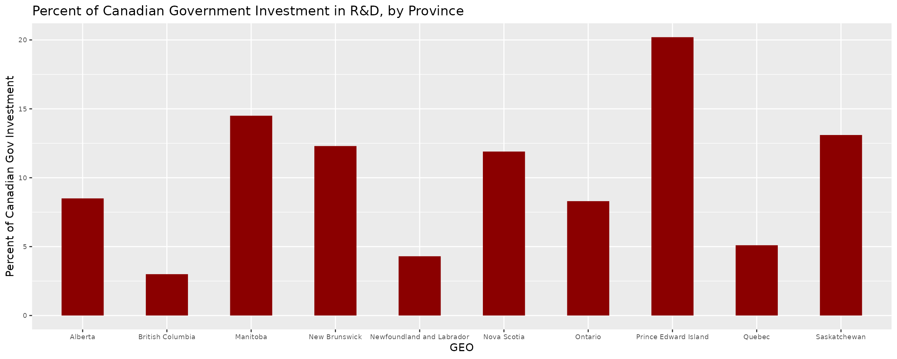
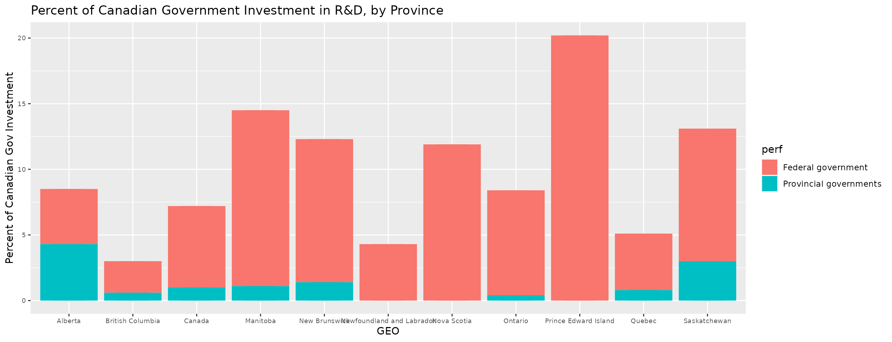
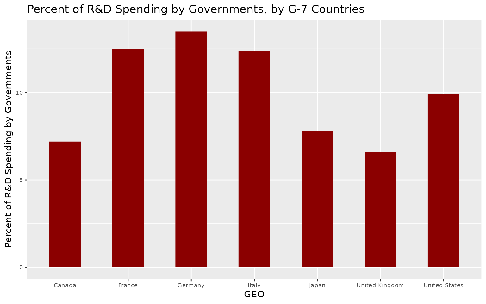

vignettes/statcanR_example2.Rmd
statcanR_example2.RmdIn this 2nd example vignette, we leverage a Statistics Canada dataset in order to demonstrate the commands available in the statcanR package and their functionality. We then proceed with some brief data analysis to demonstrate the ease with which the statcanR functions allow for a rapid transition between data cleaning and analysis.
Let’s say we are interested in understanding how much spending goes into research and development (R&D), both across Canada and compared to other developed nations. In order to identify pertinent datasets, we start by using the statcan_search() command. This command allows us to match keywords related to our topic of interest with a database/ databases available on the Statistics Canada website. Given our example topic of interest, some keywords could be “expenditure”, “research” “development”, and “province”. A useful piece of the statcan_search() command is that it can search for several words in a row. For example, instead of needing to write out “research” and “development” as separate terms in a vector, we could simply write “research and development”. This is demonstrated below:
library(statcanR)
library(dplyr)
library(DT)
library(curl)
library(dplyr)
library(ggplot2)
library(reshape2)
# Enter keywords and preferred language ("eng" for Enlgish or "fra" for French)
statcan_search(c("expenditure","research and development","province"),"eng")We will choose the 4th dataset in the list in order to conduct some comparative static analysis on R&D spending. Following the same process in Example 1, we use the table number found from the data table produced by the statcan_search() command in order to download the dataset, which we call “rd”.
# Enter tableNumber and preferred language ("eng" for Enlgish or "fra" for French)
rd <- statcan_download_data(tableNumber = "27-10-0360-01",lang="eng") %>%
# Remove unneeded variables
subset(.,REF_DATE == "2018-01-01") %>%
select(-c(REF_DATE,DGUID,UOM_ID,SCALAR_FACTOR,SCALAR_ID,VECTOR,STATUS,COORDINATE,SYMBOL,TERMINATED,DECIMALS,UOM,INDICATOR)) %>%
rename(percent_total = VALUE)
datatable(rd)Which provinces receive the most public investment for research and development? We start by examining the amount of R&D invested by province for the year 2018. Note that these values reflect the percentage of total government spending at both federal and provincial levels and is expressed as a percentage of total government spending across the whole country.
# Filter for COVID barrier
rd_cangov <-rd %>%
subset(.,`Performing sector` == "Government, total") %>%
subset(., GEO != "Canada" & GEO != "France" & GEO != "Germany" & GEO != "Italy" & GEO != "Japan" & GEO != "United Kingdom" & GEO != "United States")
options(width = 300)
# Plot data
ggplot(rd_cangov,aes(x = GEO,y = percent_total)) +
geom_bar(fill = "darkred",stat = "identity",position = "dodge", width = 0.5) +
theme(axis.text = element_text(size = 7)) +
ylab("Percent of Canadian Gov Investment") +
ggtitle("Percent of Canadian Government Investment in R&D, by Province") 
Now, let’s see how much of these values are coming from the federal government versus provincial governments.
# Filter for COVID barrier
rd_fedprov <-rd %>%
subset(.,`Performing sector` == "Federal government" | `Performing sector` == "Provincial governments") %>%
subset(., GEO != "France" & GEO != "Germany" & GEO != "Italy" & GEO != "Japan" & GEO != "United Kingdom" & GEO != "United States") %>%
mutate_if(is.numeric, funs(ifelse(is.na(.), 0, .))) %>%
mutate(perf = `Performing sector`)
# Plot data
ggplot(rd_fedprov,aes(x = GEO,y = percent_total, fill = perf)) +
geom_col(position = "stack")+
geom_bar(stat = "identity",position = "stack", width = 0.5) +
theme(axis.text = element_text(size = 7)) +
ylab("Percent of Canadian Gov Investment") +
ggtitle("Percent of Canadian Government Investment in R&D, by Province") 
The above chart confirms that in Canada, the federal government dominates provincial governments in terms of overall F&D spending (with the exception of Alberta). Finally, let’s look at how total R&D spending varies across the G-7 countries.
rd_countries <-rd %>%
subset(., GEO == "Canada" | GEO == "France" |GEO == "Germany" |GEO == "Japan" |GEO == "United Kingdom" |GEO == "United States" |GEO == "Italy") %>%
subset(.,`Performing sector` == "Government, total")
# Plot data
ggplot(rd_countries,aes(x = GEO,y = percent_total)) +
geom_bar(fill = "darkred",stat = "identity",position = "dodge", width = 0.5) +
theme(axis.text = element_text(size = 7)) +
ylab("Percent of R&D Spending by Governments") +
ggtitle("Percent of R&D Spending by Governments, by G-7 Countries") 
From the above graphics, we can see that within Canada, the federal government dominates provincial governments in terms of research and development. Nevertheless, when we expand the analysis to the cross-country level, we observe that the Canadian government is a relatively low investor in research and development.